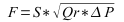
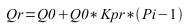

| Назва | Версія | Ліцензія | Джерело | Мови | Автор | Опис |
|---|---|---|---|---|---|---|
| Бібліотека моделей апаратів технологічних процесів | 2.0 | GPLv2 | OscadaLibs.db (SQL, GZip) > DAQ.JavaLikeCalc.techApp | en, uk, ru | Роман Савоченко Максим Лисенко (2007,2010), Ксенія Яшина (2007) |
Бібліотека моделей технологічних апаратів для створення комплексних моделей технологічних процесів, блокових схем модуля DAQ.BlockCalc.
|
Бібліотека створюється для надання моделей апаратів технологічних процесів. Бібліотека не є статичною, а будується на основі модуля JavaLikeCalc, який дозволяє створювати обчислення на мові схожій на Java. Назви функцій та їх параметрів доступні на мовах: Англійська, Українська та mRussian.
Для адресації до функцій цієї бібліотеки можна використати статичну адресу виклику DAQ.JavaLikeCalc.lib_techApp.{Func}() або динамічну SYS.DAQ.JavaLikeCalc["lib_techApp"]["{Func}"].call(), SYS.DAQ.JavaLikeCalc["lib_techApp"].{Func}(). Де {Func} — ідентифікатор функції у бібліотеці.
Для підключення бібліотеки до проекту станції OpenSCADA Ви можете отримати файл БД як:
wget http://oscada.org/svn/trunk/OpenSCADA/data/LibsDB/OscadaLibs.sql
sqlite3 -init OscadaLibs.sql OscadaLibs.db .exit
Цей завантажений файл Ви надалі можете розмістити у теці проекту станції та створити об'єкт бази даних модуля БД "SQLite", зареєструвавши файл бази даних у конфігурації.
У основі моделі кожного апарату лежить обчислення витрат на вході та тиску на виході, виходячи із тиску на вході та витрат на виході. Загалом, моделі апаратів технологічних процесів описуються різницевими рівняннями для дискретних машин.
На основі функцій цієї бібліотеки можна легко та швидко будувати моделі технологічних процесів у модулі BlockCalc шляхом поєднання блоків згідно до технологічної схеми. Приклад поєднання частини апаратів технологічної схеми наведено на рисунку 1.

У основі моделі будь якого апарату ТП лежать дві основні формули, а саме формула витрат та тиску середовища. Канонічна формула витрат середовища для перетину труби або прохідного перетину звуження має вигляд (1).
 (1)
Де:
Реальна щільність обчислюється за формулою (2).
 (2)
Де:
Будь яка труба становить потоку динамічний опір, який пов'язаний з тертям о стіни труби та який залежить від швидкості потоку. Динамічний опір труби відображається формулою (3). Загальні витрати середовища з урахуванням динамічного опору обчислюються за формулою (4).
 (3)
(3)
Де:
 (4)
(4)
Формула (1) описує ламінарний потік середовища у до критичних швидкостях. У випадку перевищення критичної швидкості обчислення витрат відбувається за формулою (5). Універсальна формула обчислення витрат на всіх швидкостях буде мати вигляд (6).
 (5)
(5)
Де:
 (6)
(6)
Де:
У динамічних системах зміна витрат на кінці труби не відбувається миттєво, а запізнюється на час переміщення ділянки середовища від початку трубопроводу до кінця. Цей час залежить від довжини труби та швидкості руху середовища у трубі. Затримку зміни витрат на кінці труби можна описати формулою (7). Результуюча формула розрахунку витрат у трубі, з урахуванням вказаних вище особливостей, записується у вигляді (8).
 (7)
(7)
Де:
 (8)
(8)
Тиск середовища у об'ємі за звичай обчислюється ідентично для всіх випадків, за формулою (9).
 (9)
(9)
У своєму складі бібліотека містить біля двох десятків моделей часто потрібних апаратів технологічних процесів та допоміжних елементів. Назви функцій та їх параметрів наявні на трьох мовах: Англійська, Українська та mRussian.
Модель затримки. Може використовуватися для імітації запізнення значень давачів.
Параметри
| Ідентифікатор | Параметр | Тип | Режим | Прихований | По замовченню |
|---|---|---|---|---|---|
| out | Вихід | Реальний | Повернення | false | 0 |
| in | Вхід | Реальний | Вхід | false | 0 |
| t_lg | Час затримки, секунд | Реальний | Вхід | false | 10 |
| f_frq | Частота обчислення, Гц | Реальний | Вхід | true | 100 |
Програма
out -= (out-in)/(t_lg*f_frq);
Модель шуму. Містить три складові:
Параметри
| Ідентифікатор | Параметр | Тип | Режим | Прихований | По замовченню |
|---|---|---|---|---|---|
| out | Вихід | Реальний | Повернення | false | 0 |
| off | Загальний зсув | Реальний | Вхід | false | 1 |
| a_g1 | Амплітуда гармоніки 1 | Реальний | Вхід | false | 10 |
| per_g1 | Період гармоніки 1, секунд | Реальний | Вхід | false | 10 |
| a_g2 | Амплітуда гармоніки 2 | Реальний | Вхід | false | 5 |
| per_g2 | Період гармоніки 2, секунд | Реальний | Вхід | false | 0.1 |
| a_rnd | Амплітуда випадкових значень | Реальний | Вхід | false | 1 |
| f_frq | Частота обчислення, Гц | Реальний | Вхід | true | 100 |
| tmp_g1 | Лічильник гармоніки 1 | Реальний | Вхід | true | 0 |
| tmp_g2 | Лічильник гармоніки 2 | Реальний | Вхід | true | 0 |
Програма
tmp_g1 = (tmp_g1 > 6.28) ? 0 : tmp_g1+6.28/(per_g1*f_frq);
tmp_g2 = (tmp_g2 > 6.28) ? 0 : tmp_g2+6.28/(per_g2*f_frq);
out = off + a_g1*sin(tmp_g1) + a_g2*sin(tmp_g2) + a_rnd*(rand(2)-1);
Модель кульового крану. Включає час ходу та час відриву.
Параметри
| Ідентифікатор | Параметр | Тип | Режим | Прихований | По замовченню |
|---|---|---|---|---|---|
| pos | Положення, % | Реальний | Вихід | false | 0 |
| com | Команда | Логічний | Вхід | false | 0 |
| st_open | Стан "Відкрито" | Логічний | Вихід | false | 0 |
| st_close | Стан "Закрито" | Логічний | Вихід | false | 1 |
| t_full | Час ходу, секунд | Реальний | Вхід | false | 5 |
| t_up | Час відриву, секунд | Реальний | Вхід | false | 0.5 |
| f_frq | Частота обчислення, Гц | Реальний | Вхід | true | 100 |
| tmp_up | Лічильник відриву | Реальний | Вхід | true | 0 |
| lst_com | Остання команда | Логічний | Вхід | true | 0 |
Програма
if(!(st_close && !com) && !(st_open && com)) {
tmp_up = (pos > 0 && pos < 100) ? 0 : (tmp_up>0&&lst_com==com)?tmp_up-1/f_frq:t_up;
pos += (tmp_up > 0) ? 0 : (100*(com?1:-1))/(t_full*f_frq);
pos = (pos > 100) ? 100 : (pos<0)?0:pos;
st_open = (pos >= 100) ? true : false;
st_close = (pos <= 0) ? true : false;
lst_com = com;
}
Модель сепаратору з двома фазами, рідинною та газовою.
Параметри
| Ідентифікатор | Параметр | Тип | Режим | Прихований | По замовченню |
|---|---|---|---|---|---|
| Fi | Вхідні витрати, т/год | Реальний | Вихід | false | 0 |
| Pi | Вхідний тиск, ата | Реальний | Вхід | false | 1 |
| Si | Вхідний перетин, м2 | Реальний | Вхід | false | 0.2 |
| Fo | Вихідні витрати, т/год | Реальний | Вхід | false | 0 |
| Po | Вихідний тиск, ата | Реальний | Вихід | false | 1 |
| So | Вихідний перетин, м2 | Реальний | Вхід | false | 0.2 |
| lo | Вихідна довжина, м | Реальний | Вхід | false | 10 |
| Fo_lq | Вихідні витрати рідини, т/год | Реальний | Вхід | false | 0 |
| Po_lq | Вихідний тиск рідини, ата | Реальний | Вихід | false | 1 |
| Llq | Рівень рідини, % | Реальний | Вихід | false | 0 |
| PercLq | % рідини | Реальний | Вхід | false | 0.01 |
| Vap | Об'єм апарату, м3 | Реальний | Вхід | false | 10 |
| Q0 | Нормальна щільність середовища, кг/м3 | Реальний | Вхід | false | 1 |
| Qlq | Щільність рідини, кг/м3 | Реальний | Вхід | false | 1000 |
| f_frq | Частота обчислення, Гц | Реальний | Вхід | true | 200 |
Програма
Flq = max(0, Fi*PercLq);
DAQ.JavaLikeCalc.lib_techApp.pipeBase(Fi, Pi, 293, Si, Fo+Flq, Po, 293, So, lo, Q0, 0.95, 0.01, f_frq);
Llq = max(0, min(100,Llq+0.27*(Flq-Fo_lq)/(Vap*Qlq*f_frq)));
Po_lq = Po + Llq*Vap/Qlq;
Модель клапану яка враховує:
Параметри
| Ідентифікатор | Параметр | Тип | Режим | Прихований | По замовченню |
|---|---|---|---|---|---|
| Fi | Вхідні витрати, т/год | Реальний | Вихід | false | 0 |
| Pi | Вхідний тиск, ата | Реальний | Вхід | false | 1 |
| Ti | Вхідна температура, К | Реальний | Вхід | false | 273 |
| Fo | Вихідні витрати, т/год | Реальний | Вхід | false | 0 |
| Po | Вихідний тиск, ата | Реальний | Вихід | false | 1 |
| To | Вихідна температура, К | Реальний | Вихід | false | 273 |
| So | Вихідний перетин труби, м2 | Реальний | Вхід | false | 0.2 |
| lo | Вихідна довжина труби, м | Реальний | Вхід | false | 10 |
| S_v1 | Перетин клапану 1, м2 | Реальний | Вхід | false | 0.1 |
| l_v1 | Положення клапану 1, % | Реальний | Вхід | false | 0 |
| t_v1 | Час відкриття клапану 1, секунди | Реальний | Вхід | false | 10 |
| S_v2 | Перетин клапану 2, м2 | Реальний | Вхід | false | 0.05 |
| l_v2 | Положення клапану 2, % | Реальний | Вхід | false | 0 |
| t_v2 | Час відкриття клапану 2, секунд | Реальний | Вхід | false | 5 |
| Q0 | Нормальна щільність середовища, кг/м3 | Реальний | Вхід | false | 1 |
| Kln | Коефіцієнт нелінійності | Реальний | Вхід | false | 1 |
| Kpr | Коефіцієнт стискання середовища [0...1] | Реальний | Вхід | false | 0.95 |
| Ct | Теплоємність середовища | Реальний | Вхід | false | 20 |
| Riz | Тепловий опір ізоляції | Реальний | Вхід | false | 20 |
| noBack | Зворотній клапан | Логічний | Вхід | false | 0 |
| Fwind | Швидкість повітря | Реальний | Вхід | false | 1 |
| Twind | Температура повітря, К | Реальний | Вхід | false | 273 |
| f_frq | Частота обчислення, Гц | Реальний | Вхід | true | 200 |
| tmp_l1 | Затримка положення 1 | Реальний | Вихід | true | 0 |
| tmp_l2 | Затримка положення 2 | Реальний | Вихід | true | 0 |
Програма
Qr = Q0+Q0*Kpr*(Pi-1);
tmp_l1 += (abs(l_kl1-tmp_l1) > 5) ? 100*sign(l_kl1-tmp_l1)/(t_kl1*f_frq) : (l_kl1-tmp_l1)/(t_kl1*f_frq);
tmp_l2 += (abs(l_kl2-tmp_l2) > 5) ? 100*sign(l_kl2-tmp_l2)/(t_kl2*f_frq) : (l_kl2-tmp_l2)/(t_kl2*f_frq);
Sr = (S_kl1*pow(tmp_l1,Kln)+S_kl2*pow(tmp_l2,Kln))/pow(100,Kln);
DAQ.JavaLikeCalc.lib_techApp.pipeBase(Fi, Pi, Ti, Sr, EVAL_REAL, Po, 293, So, lo, Q0, Kpr, 0.01, f_frq);
if(noBack) Fi = max(0, Fi);
Po = max(0, min(100,Po+0.27*(Fi-Fo)/(Q0*Kpr*So*lo*f_frq)));
To = max(0, min(2e3,To+(abs(Fi)*(Ti*pow(Po/Pi,0.02)-To)+(Fwind+1)*(Twind-To)/Riz)/(Ct*So*lo*Qr*f_frq)));
Модель чистої(транспортної) затримки. Реалізується шляхом включення декількох ланок простої затримки. Призначено для імітації затримок у довгих трубопроводах.
Параметри
| Ідентифікатор | Параметр | Тип | Режим | Прихований | По замовченню |
|---|---|---|---|---|---|
| out | Вихід | Реальний | Повернення | false | 0 |
| in | Вхід | Реальний | Вхід | false | 0 |
| t_lg | Час затримки, секунд | Реальний | Вхід | false | 10 |
| f_frq | Частота обчислення, Гц | Реальний | Вхід | true | 100 |
| cl1 | Ланка 1 | Реальний | Вхід | true | 0 |
| cl2 | Ланка 2 | Реальний | Вхід | true | 0 |
| cl3 | Ланка 3 | Реальний | Вхід | true | 0 |
Програма
cl1 -= (cl1-in)/(t_lg*f_frq/4);
cl2 -= (cl2-cl1)/(t_lg*f_frq/4);
cl3 -= (cl3-cl2)/(t_lg*f_frq/4);
out -= (out-cl3)/(t_lg*f_frq/4);
Модель барабану котлоагрегату.
Параметри
| Ідентифікатор | Параметр | Тип | Режим | Прихований | По замовченню |
|---|---|---|---|---|---|
| Fi1 | Вхідні витрати води, т/год | Реальний | Вихід | false | 22 |
| Pi1 | Вхідний тиск води, ата | Реальний | Вхід | false | 43 |
| Ti1 | Вхідна температура води, К | Реальний | Вхід | false | 523 |
| Si1 | Вхідний перетин труб з водою, м2 | Реальний | Вхід | false | 0.6 |
| Fi2 | Вхідні витрати димових газів, т/год | Реальний | Вихід | false | |
| Pi2 | Вхідний тиск димових газів, ата | Реальний | Вхід | false | 1.3 |
| Ti2 | Вхідна температура димових газів, К | Реальний | Вхід | false | 1700 |
| Si2 | Вхідний перетин труби димових газів, м2 | Реальний | Вхід | false | 10 |
| Vi1 | Об'єм барабану, м3 | Реальний | Вхід | false | 3 |
| Lo | Рівень у барабані, % | Реальний | Вихід | false | 10 |
| S | Поверхня нагріву, м2 | Реальний | Вхід | false | 15 |
| k | Коефіцієнт тепловіддачі | Реальний | Вхід | false | 0.8 |
| Fo | Вихідні витрати пару, т/год | Реальний | Вхід | false | 20 |
| Po1 | Вихідний тиск пару, ата | Реальний | Вихід | false | 41.68 |
| To1 | Вихідна температура пару, К | Реальний | Вихід | false | 10 |
| So1 | Вихідний перетин труби пару, м2 | Реальний | Вхід | false | 0.5 |
| lo1 | Вихідна довжина труби пару, м | Реальний | Вхід | false | 5 |
| Fo2 | Вихідні витрати димових газів, т/год | Реальний | Вхід | false | 180 |
| Po2 | Вихідний тиск димових газів, ата | Реальний | Вихід | false | 1 |
| To2 | Вихідна температура димових газів, К | Реальний | Вхід | false | 0 |
| Fstm | Витрати пару у барабані, т/год | Реальний | Вихід | false | 0 |
| Tv | Температура води у барабані, K | Реальний | Вихід | false | 0 |
| f_frq | Частота обчислення, Гц | Реальний | Вхід | false | 200 |
Програма
// Water
DAQ.JavaLikeCalc.lib_techApp.pipeBase(Fi1, Pi1, 293, Si1, EVAL_REAL, Po1, 293, So1, lo1, 1e3, 0.001, 0.01, f_frq);
Fi1 = max(0, Fi1);
// Steam
Lo = max(0, min(100,Lo+(Fi1-Fstm)*100/(Vi1*1000*f_frq)));
To1 = (100*pow(Po1,0.241)+5) + 273;
if(Tv < To1) {
Tv += (k*S*(Ti2-Tv)-Fi1*0.00418*(Tv-Ti1))/f_frq;
Fstm = 0;
}
if(Tv >= To1) {
Tv = To1;
Lambda = 2750-0.00418*(Tv-273);
Fstm = (5*S*Fi2*(Ti2-Tv)-Fi1*0.00418*(Tv-Ti1))/(Po1*Lambda);
}
To2 = Ti2-Tv/k;
Po1 = max(0, min(100,Po1+0.27*(Fstm-Fo)/(1.2*0.98*((1-Lo/100)*Vi1+So1*lo1)*f_frq)));
// Smoke gas
DAQ.JavaLikeCalc.lib_techApp.pipeBase(Fi2, Pi2, 293, Si2, Fo2, Po2, 293, Si2, 30, 1.2, 0.98, 0.01, f_frq);
Модель топки котлоагрегату, який працює на трьох видах палива, початково це: доменний, коксовий та природний гази.
Параметри
| Ідентифікатор | Параметр | Тип | Режим | Прихований | По замовченню |
|---|---|---|---|---|---|
| Fi1 | Вхідні витрати доменного газу, т/год | Реальний | Вихід | false | |
| Pi1 | Вхідний тиск доменного газу, ата | Реальний | Вхід | false | |
| Ti1 | Вхідна температура димових газів, К | Реальний | Вхід | false | 40 |
| Si1 | Вхідний перетин труби димових газів, м2 | Реальний | Вхід | false | |
| Fi2 | Вхідні витрати природного газу, т/год | Реальний | Вихід | false | |
| Pi2 | Вхідний тиск природного газу, ата | Реальний | Вхід | false | |
| Ti2 | Вхідна температура природного газу, К | Реальний | Вхід | false | 20 |
| Si2 | Вхідний перетин труби природного газу, м2 | Реальний | Вхід | false | |
| Fi3 | Вхідні витрати коксового газу, т/год | Реальний | Вихід | false | |
| Pi3 | Вхідний тиск коксового газу, ата | Реальний | Вхід | false | |
| Ti3 | Вхідна температура коксового газу, К | Реальний | Вхід | false | 0 |
| Si3 | Вхідний перетин труби коксового газу, м2 | Реальний | Вхід | false | |
| Fi4 | Вхідні витрати повітря, т/год | Реальний | Вихід | false | |
| Pi4 | Вхідний тиск повітря, ата | Реальний | Вхід | false | |
| Ti4 | Вхідна температура повітря, К | Реальний | Вхід | false | 20 |
| Si4 | Вхідний перетин труби повітря, м2 | Реальний | Вхід | false | |
| Fo | Вихідні витрати димових газів, т/год | Реальний | Вхід | false | |
| Po | Вихідний тиск димових газів, ата | Реальний | Вихід | false | |
| To | Вихідна температура димових газів, К | Реальний | Вихід | false | |
| So | Вихідний перетин труби димових газів, м2 | Реальний | Вхід | false | 90 |
| lo | Вихідна довжина труби димових газів, м | Реальний | Вхід | false | |
| V | Об'єм топки, м3 | Реальний | Вхід | false | 830 |
| CO | Відсоток вмісту CO у димових газах, % | Реальний | Вихід | false | |
| O2 | Відсоток вмісту O2 у димових газах, % | Реальний | Вихід | false | |
| f_frq | Частота обчислення, Гц | Реальний | Вхід | false | 200 |
Програма
using DAQ.JavaLikeCalc.lib_techApp;
pipeBase(Fi1, Pi1, Ti1, Si1, EVAL_REAL, Po, 293, So, lo, 1.2, 0.95, 0.01, f_frq); Fi1 = max(0, Fi1);
pipeBase(Fi2, Pi2, Ti2, Si2, EVAL_REAL, Po, 293, So, lo, 0.7, 0.95, 0.01, f_frq); Fi2 = max(0, Fi2);
pipeBase(Fi3, Pi3, Ti3, Si3, EVAL_REAL, Po, 293, So, lo, 1.33, 0.95, 0.01, f_frq); Fi3 = max(0, Fi3);
pipeBase(Fi4, Pi4, Ti4, Si4, EVAL_REAL, Po, 293, So, lo, 1.293, 0.95, 0.01, f_frq); Fi4 = max(0, Fi4);
Neobhod_vzd = Fi1 + 10*Fi2 + 4*Fi3;
F_DG = Fi1 + Fi2 + Fi3 + Fi4;
O2 = max(0, min(100,(Fi4-Neobhod_vzd)*100/F_DG));
CO = min(100, (O2<1) ? (1.2*abs(O2)) : 0);
koef = min(1, Fi4/Neobhod_vzd);
Q = koef*(8050*Fi2+3900*Fi3+930*Fi1);
delta_t = Q/(F_DG*1.047);
To = max(0, min(2000,(delta_t+(Ti4-273)+(Ti3-273)*(Fi3/Fi1)+(Ti2-273)*(Fi2/Fi1)+(Ti1-273)*(Fi1/Fi4))+273));
Po = max(0, min(10,Po+0.27*(F_DG-Fo)/(1.2*0.95*(So*lo+V)*f_frq)));
Навантаження з фіксованим тиском мережі. Містить параметр для підключення шуму.
Параметри
| Ідентифікатор | Параметр | Тип | Режим | Прихований | По замовченню |
|---|---|---|---|---|---|
| Fi | Вхідні витрати, т/год | Реальний | Вихід | false | 10 |
| Pi | Вхідний тиск, ата | Реальний | Вхід | false | 1 |
| Po | Завдання вихідного тиску, ата | Реальний | Вхід | false | 1 |
| So | Вихідний перетин труби, м2 | Реальний | Вхід | false | 0.1 |
| Kpr | Коефіцієнт стискання середовища [0...1] | Реальний | Вхід | false | 0.95 |
| Noise | Шум вхідних витрат | Реальний | Вхід | false | 1 |
| Q0 | Нормальна щільність середовища, кг/м3 | Реальний | Вхід | false | 1 |
| f_frq | Частота обчислення, Гц | Реальний | Вхід | true | 200 |
Програма
DAQ.JavaLikeCalc.lib_techApp.pipeBase(Fi, Pi, 293, So, EVAL_REAL, Po, 293, So, 10, Q0, Kpr, 0.01, f_frq);
Джерело з фіксованим тиском. Містить параметр для підключення шуму.
Параметри
| Ідентифікатор | Параметр | Тип | Режим | Прихований | По замовченню |
|---|---|---|---|---|---|
| Pi | Завдання вхідного тиску, ата | Реальний | Вхід | false | 10 |
| Fo | Вихідні витрати, т/год | Реальний | Вхід | false | 0 |
| Po | Вихідний тиск, ата | Реальний | Вихід | false | 1 |
| So | Вихідний перетин труби, м2 | Реальний | Вхід | false | 0.1 |
| lo | Вихідна довжина труби, м | Реальний | Вхід | false | 100 |
| Noise | Шум вхідних витрат | Реальний | Вхід | false | 1 |
| Q0 | Нормальна щільність середовища, кг/м3 | Реальний | Вхід | false | 1 |
| Kpr | Коефіцієнт стискання середовища [0...1] | Реальний | Вхід | false | 0.95 |
| f_frq | Частота обчислення, Гц | Реальний | Вхід | true | 200 |
| Fit | Вхідні витрати, утримані | Реальний | Вихід | true | 0 |
Програма
DAQ.JavaLikeCalc.lib_techApp.pipeBase(Fit, Pi*Noise, 293, So, Fo, Po, 293, So, lo, Q0, Kpr, 0.01, f_frq);
Модель повітряного охолоджувача газового потоку.
Параметри
| Ідентифікатор | Параметр | Тип | Режим | Прихований | По замовченню |
|---|---|---|---|---|---|
| Fi | Вхідні витрати, т/год | Реальний | Вихід | false | 0 |
| Pi | Вхідний тиск, ата | Реальний | Вхід | false | 1 |
| Ti | Вхідна температура, К | Реальний | Вхід | false | 273 |
| Si | Перетин трубок, м2 | Реальний | Вхід | false | 0.05 |
| li | Загальна довжина трубок, м | Реальний | Вхід | false | 10 |
| Fo | Вихідні витрати, т/год | Реальний | Вхід | false | 0 |
| Po | Вихідний тиск, ата | Реальний | Вихід | false | 1 |
| To | Вихідна температура, К | Реальний | Вихід | false | 273 |
| So | Вихідний перетин труби, м2 | Реальний | Вхід | false | 0.2 |
| lo | Вихідна довжина труби, м | Реальний | Вхід | false | 10 |
| Tair | Температура охолодження повітря, К | Реальний | Вхід | false | 283 |
| Wc | Продуктивність холодильника | Реальний | Вхід | false | 200 |
| Q0 | Нормальна щільність середовища, кг/м3 | Реальний | Вхід | false | 1 |
| Ct | Теплоємність середовища | Реальний | Вхід | false | 100 |
| Rt | Тепловий опір | Реальний | Вхід | false | 1 |
| f_frq | Частота обчислення, Гц | Реальний | Вхід | true | 200 |
Програма
DAQ.JavaLikeCalc.lib_techApp.pipeBase(Fi, Pi, 293, Si, Fo, Po, 293, So, lo, Q0, 0.95, 0.01, f_frq);
Qr = Q0 + Q0*0.95*(Pi-1);
To += (Fi*(Ti-To)+Wc*(Tair-To)/Rt)/(Ct*(Si*li+So*lo)*Qr*f_frq);
Модель газового компресора. Враховує ефект помпажу. Помпаж розраховується за газово-динамічною кривою, виходячи з якої розраховується коефіцієнт запасу за помпажем.
Параметри
| Ідентифікатор | Параметр | Тип | Режим | Прихований | По замовченню |
|---|---|---|---|---|---|
| Fi | Вхідні витрати, т/год | Реальний | Вихід | false | 0 |
| Pi | Вхідний тиск, ата | Реальний | Вхід | false | 1 |
| Ti | Вхідна температура, К | Реальний | Вхід | false | 273 |
| Fo | Вихідні витрати, т/год | Реальний | Вхід | false | 0 |
| Po | Вихідний тиск, ата | Реальний | Вихід | false | 1 |
| To | Вихідна температура, К | Реальний | Вихід | false | 273 |
| So | Вихідний перетин труби, м2 | Реальний | Вхід | false | 0.2 |
| lo | Вихідна довжина труби, м | Реальний | Вхід | false | 2 |
| Kmrg | Коефіцієнт запасу за помпажем | Реальний | Вихід | false | 0.1 |
| N | Оберти компресору, тис. об./хвил | Реальний | Вхід | false | 0 |
| V | Об'єм компресору, м3 | Реальний | Вхід | false | 7 |
| Kpmp | Коефіцієнт помпажу, точка помпажу | Реальний | Вхід | false | 0.066 |
| Kslp | Коефіцієнт нахилу помпажної кривої | Реальний | Вхід | false | 0.08 |
| Q0 | Нормальна щільність середовища, кг/м3 | Реальний | Вхід | false | 1 |
| Kpr | Коефіцієнт стискання середовища [0...1] | Реальний | Вхід | false | 0.95 |
| Ct | Теплоємність середовища | Реальний | Вхід | false | 100 |
| Riz | Тепловий опір ізоляції | Реальний | Вхід | false | 100 |
| Fwind | Швидкість повітря | Реальний | Вхід | false | 1 |
| Twind | Температура повітря, К | Реальний | Вхід | false | 273 |
| f_frq | Частота обчислення, Гц | Реальний | Вхід | true | 200 |
| Fit | Вхідні витрати, утримані | Реальний | Вихід | true | 0 |
Програма
Pmax = max(Pi, Po);
Pmin = min(Pi, Po);
Qr = Q0 + Q0*Kpr*(Pi-1);
Qrf = Q0 + Q0*Kpr*(Pmax-1);
Ftmp = (N > 0.1) ? (1-10*(Po-Pi)/(Qr*(pow(N,3)+0.1)*Kpmp)) : 1;
Kmrg = 1-Ftmp; //The margin coefficient
Fi = V*N*Qr*sign(Ftmp)*pow(abs(Ftmp),Kslp)+
0.3*(4*So*Qrf/(0.01*lo*1.7724+4*Qrf))*sign(Pi-Po)*pow(Qrf*(Pmax-max(Pmax*0.528,Pmin)),0.5);
Fit -= (Fit-Fi)/max(1,(lo*f_frq)/max(1e-4,abs(Fi/(Qrf*So))));
Po = max(0, min(100,Po+0.27*(Fi-Fo)/(Q0*Kpr*So*lo*f_frq)));
To += (abs(Fi)*(Ti*pow(Po/Pi,0.3)-To)+(Fwind+1)*(Twind-To)/Riz)/(Ct*(V+So*lo)*Qr*f_frq);
Джерело з фіксованими витратами. Містить параметр для підключення шуму.
Параметри
| Ідентифікатор | Параметр | Тип | Режим | Прихований | По замовченню |
|---|---|---|---|---|---|
| Fi | Завдання вхідних витрат, т/год | Реальний | Вхід | false | 10 |
| Fo | Вихідні витрати, т/год | Реальний | Вхід | false | 10 |
| Po | Вихідний тиск, ата | Реальний | Вихід | false | 1 |
| So | Вихідний перетин труби, м2 | Реальний | Вхід | false | 0.1 |
| lo | Вихідна довжина труби, м | Реальний | Вхід | false | 100 |
| Noise | Шум вхідних витрат | Реальний | Вхід | false | 1 |
| Q0 | Нормальна щільність середовища, кг/м3 | Реальний | Вхід | false | 1 |
| Kpr | Коефіцієнт стискання середовища [0...1] | Реальний | Вхід | false | 0.95 |
| f_frq | Частота обчислення, Гц | Реальний | Вхід | true | 100 |
Програма
Po = max(0, min(100,Po+0.27*(Noise*Fi-Fo)/(Q0*Kpr*So*lo*f_frq)));
Реалізація базових основ моделі труби:
Параметри
| Ідентифікатор | Параметр | Тип | Режим | Прихований | По замовченню |
|---|---|---|---|---|---|
| Fi | Вхідні витрати, т/год | Реальний | Вихід | false | 0 |
| Pi | Вхідний тиск, ата | Реальний | Вхід | false | 1 |
| Ti | Вхідна температура, К | Реальний | Вхід | false | 293 |
| Si | Вхідний перетин, м2 | Реальний | Вхід | false | 0.2 |
| Fo | Вихідні витрати, т/год | Реальний | Вхід | false | 0 |
| Po | Вихідний тиск, ата | Реальний | Вихід | false | 1 |
| To | Вихідна температура, К | Реальний | Вихід | false | 293 |
| So | Вихідний перетин труби, м2 | Реальний | Вхід | false | 0.2 |
| lo | Вихідна довжина труби, м | Реальний | Вхід | false | 10 |
| Q0 | Нормальна щільність середовища, кг/м3 | Реальний | Вхід | false | 1 |
| Kpr | Коефіцієнт стискання середовища [0...1] | Реальний | Вхід | false | 0.98 |
| Ktr | Коефіцієнт тертя | Реальний | Вхід | false | 0.01 |
| f_frq | Частота обчислення, Гц | Реальний | Вхід | false | 100 |
Програма
Pmax = max(Pi, Po);
Pmin = min(Pi, Po);
Qr = Q0 + Q0*Kpr*(Pmax-1);
Fit = 630*(4*Si*So*Qr/(Ktr*lo*1.7724*Si+4*So*Qr))*sign(Pi-Po)*pow(Qr*(Pmax-max(Pmax*0.528,Pmin)),0.5);
Fi -= (Fi-Fit)/max(1,(lo*f_frq)/max(1,abs(Fit/(Qr*So))));
if(!Fo.isEVal()) Po = max(0, min(100,Po+0.27*(Fi-Fo)/(Q0*Kpr*So*lo*f_frq)));
Модель вузла труб за схемою "1 -> 1".
Параметри
| Ідентифікатор | Параметр | Тип | Режим | Прихований | По замовченню |
|---|---|---|---|---|---|
| Fi | Вхідні витрати, т/год | Реальний | Вихід | false | 0 |
| Pi | Вхідний тиск, ата | Реальний | Вхід | false | 1 |
| Fo | Вихідні витрати, т/год | Реальний | Вхід | false | 0 |
| Po | Вихідний тиск, ата | Реальний | Вихід | false | 1 |
| So | Вихідний перетин труби, м2 | Реальний | Вхід | false | 0.2 |
| lo | Вихідна довжина труби, м | Реальний | Вхід | false | 10 |
| Q0 | Нормальна щільність середовища, кг/м3 | Реальний | Вхід | false | 1 |
| Kpr | Коефіцієнт стискання середовища [0...1] | Реальний | Вхід | false | 0.95 |
| f_frq | Частота обчислення, Гц | Реальний | Вхід | true | 200 |
| Pti | Pti | Реальний | Вихід | true | 1 |
| Fto | Fto | Реальний | Вихід | true | 0 |
| Pt1 | Pt1 | Реальний | Вихід | true | 1 |
| Ft1 | Ft1 | Реальний | Вихід | true | 0 |
Програма
DAQ.JavaLikeCalc.lib_techApp.pipeBase(Fi, Pi, 293, So, Ft1, Pti, 293, So, 0.33*lo, Q0, Kpr, 0.01, f_frq);
DAQ.JavaLikeCalc.lib_techApp.pipeBase(Ft1, Pti, 293, So, Fto, Pt1, 293, So, 0.33*lo, Q0, Kpr, 0.01, f_frq);
DAQ.JavaLikeCalc.lib_techApp.pipeBase(Fto, Pt1, 293, So, Fo, Po, 293, So, 0.33*lo, Q0, Kpr, 0.01, f_frq);
Модель вузла труб за схемою "2 -> 1".
Параметри
| Ідентифікатор | Параметр | Тип | Режим | Прихований | По замовченню |
|---|---|---|---|---|---|
| Fi1 | Вхідні витрати 1, т/год | Реальний | Вихід | false | 0 |
| Pi1 | Вхідний тиск 1, ата | Реальний | Вхід | false | 1 |
| Ti1 | Вхідна температура 1, К | Реальний | Вхід | false | 273 |
| Si1 | Вхідний перетин 1, м2 | Реальний | Вхід | false | 0.2 |
| Fi2 | Вхідні витрати 2, т/год | Реальний | Вихід | false | 0 |
| Pi2 | Вхідний тиск 2, ата | Реальний | Вхід | false | 1 |
| Ti2 | Вхідна температура 2, К | Реальний | Вхід | false | 273 |
| Si2 | Вхідний перетин 2, м2 | Реальний | Вхід | false | 0.2 |
| Fo | Вихідні витрати, т/год | Реальний | Вхід | false | 0 |
| Po | Вихідний тиск, ата | Реальний | Вихід | false | 1 |
| To | Вихідна температура, К | Реальний | Вихід | false | 273 |
| So | Вихідний перетин труби, м2 | Реальний | Вхід | false | 0.2 |
| lo | Вихідна довжина труби, м | Реальний | Вхід | false | 10 |
| Q0 | Нормальна щільність середовища, кг/м3 | Реальний | Вхід | false | 1 |
| Kpr | Коефіцієнт стискання середовища [0...1] | Реальний | Вхід | false | 0.95 |
| Ct | Теплоємність середовища | Реальний | Вхід | false | 20 |
| Riz | Тепловий опір ізоляції | Реальний | Вхід | false | 20 |
| Fwind | Швидкість повітря | Реальний | Вхід | false | 1 |
| Twind | Температура повітря, К | Реальний | Вхід | false | 273 |
| f_frq | Частота обчислення, Гц | Реальний | Вхід | true | 100 |
Програма
DAQ.JavaLikeCalc.lib_techApp.pipeBase(Fi1, Pi1, 293, Si1, EVAL_REAL, Po, 293, So, lo, Q0, Kpr, 0.01, f_frq);
DAQ.JavaLikeCalc.lib_techApp.pipeBase(Fi2, Pi2, 293, Si2, EVAL_REAL, Po, 293, So, lo, Q0, Kpr, 0.01, f_frq);
Po = max(0, min(100,Po+0.27*(Fi1+Fi2-Fo)/(Q0*Kpr*So*lo*f_frq)));
To = max(0, To+(Fi1*(Ti1-To)+Fi2*(Ti2-To)+(Fwind+1)*(Twind-To)/Riz)/(Ct*So*lo*Q0*f_frq));
Модель вузла труб за схемою "3 -> 1".
Параметри
| Ідентифікатор | Параметр | Тип | Режим | Прихований | По замовченню |
|---|---|---|---|---|---|
| Fi1 | Вхідні витрати 1, т/год | Реальний | Вихід | false | 0 |
| Pi1 | Вхідний тиск 1, ата | Реальний | Вхід | false | 1 |
| Ti1 | Вхідна температура 1, К | Реальний | Вхід | false | 273 |
| Si1 | Вхідний перетин 1, м2 | Реальний | Вхід | false | 0.2 |
| Fi2 | Вхідні витрати 2, т/год | Реальний | Вихід | false | 0 |
| Pi2 | Вхідний тиск 2, ата | Реальний | Вхід | false | 1 |
| Ti2 | Вхідна температура 2, К | Реальний | Вхід | false | 273 |
| Si2 | Вхідний перетин 2, м2 | Реальний | Вхід | false | 0.2 |
| Fi3 | Вхідні витрати 3, т/год | Реальний | Вихід | false | 0 |
| Pi3 | Вхідний тиск 3, ата | Реальний | Вхід | false | 1 |
| Ti3 | Вхідна температура 3, К | Реальний | Вхід | false | 273 |
| Si3 | Вхідний перетин 3, м2 | Реальний | Вхід | false | 0.2 |
| Fo | Вихідні витрати, т/год | Реальний | Вхід | false | 0 |
| Po | Вихідний тиск, ата | Реальний | Вихід | false | 1 |
| To | Вихідна температура, К | Реальний | Вихід | false | 273 |
| So | Вихідний перетин труби, м2 | Реальний | Вхід | false | 0.2 |
| lo | Вихідна довжина труби, м | Реальний | Вхід | false | 10 |
| Q0 | Нормальна щільність середовища, кг/м3 | Реальний | Вхід | false | 1 |
| Kpr | Коефіцієнт стискання середовища [0...1] | Реальний | Вхід | false | 0.95 |
| Ct | Теплоємність середовища | Реальний | Вхід | false | 20 |
| Riz | Тепловий опір ізоляції | Реальний | Вхід | false | 20 |
| Fwind | Швидкість повітря | Реальний | Вхід | false | 1 |
| Twind | Температура повітря, К | Реальний | Вхід | false | 273 |
| f_frq | Частота обчислення, Гц | Реальний | Вхід | true | 100 |
Програма
DAQ.JavaLikeCalc.lib_techApp.pipeBase(Fi1, Pi1, 293, Si1, EVAL_REAL, Po, 293, So, lo, Q0, Kpr, 0.01, f_frq);
DAQ.JavaLikeCalc.lib_techApp.pipeBase(Fi2, Pi2, 293, Si2, EVAL_REAL, Po, 293, So, lo, Q0, Kpr, 0.01, f_frq);
DAQ.JavaLikeCalc.lib_techApp.pipeBase(Fi3, Pi3, 293, Si3, EVAL_REAL, Po, 293, So, lo, Q0, Kpr, 0.01, f_frq);
Po = max(0, min(100,Po+0.27*(Fi1+Fi2+Fi3-Fo)/(Q0*Kpr*So*lo*f_frq)));
To = max(0, To+(Fi1*(Ti1-To)+Fi2*(Ti2-To)+Fi3*(Ti3-To)+(Fwind+1)*(Twind-To)/Riz)/(Ct*So*lo*Q0*f_frq));
Модель вузла труб за схемою "1 -> 2".
Параметри
| Ідентифікатор | Параметр | Тип | Режим | Прихований | По замовченню |
|---|---|---|---|---|---|
| Fi | Вхідні витрати, т/год | Реальний | Вихід | false | 0 |
| Pi | Вхідний тиск, ата | Реальний | Вхід | false | 1 |
| Fo1 | Вихідні витрати 1, т/год | Реальний | Вхід | false | 0 |
| Po1 | Вихідний тиск 1, ата | Реальний | Вихід | false | 1 |
| So1 | Вихідний перетин труби 1, м2 | Реальний | Вхід | false | 0.2 |
| lo1 | Вихідна довжина труби 1, м | Реальний | Вхід | false | 10 |
| Fo2 | Вихідні витрати 2, т/год | Реальний | Вхід | false | 0 |
| Po2 | Вихідний тиск 2, ата | Реальний | Вихід | false | 1 |
| So2 | Вихідний перетин труби 2, м2 | Реальний | Вхід | false | 0.2 |
| lo2 | Вихідна довжина труби 2, м | Реальний | Вхід | false | 10 |
| Q0 | Нормальна щільність середовища, кг/м3 | Реальний | Вхід | false | 1 |
| Kpr | Коефіцієнт стискання середовища [0...1] | Реальний | Вхід | false | 0.95 |
| f_frq | Частота обчислення, Гц | Реальний | Вхід | true | 100 |
| F1tmp | Вхідні витрати утримані 1 | Реальний | Вихід | true | 0 |
| F2tmp | Вхідні витрати утримані 2 | Реальний | Вихід | true | 0 |
| Pot1 | Вихідний тиск утриманий 1 | Реальний | Вихід | true | 1 |
| Pot2 | Вихідний тиск утриманий 2 | Реальний | Вихід | true | 1 |
Програма
DAQ.JavaLikeCalc.lib_techApp.pipeBase(F1tmp, Pi, 293, So1, Fo1, Po1, 293, So1, lo1, Q0, Kpr, 0.01, f_frq);
DAQ.JavaLikeCalc.lib_techApp.pipeBase(F2tmp, Pi, 293, So2, Fo2, Po2, 293, So2, lo2, Q0, Kpr, 0.01, f_frq);
Fi = F1tmp + F2tmp;
Модель вузла труб за схемою "1 -> 3".
Параметри
| Ідентифікатор | Параметр | Тип | Режим | Прихований | По замовченню |
|---|---|---|---|---|---|
| Fi | Вхідні витрати, т/год | Реальний | Вихід | false | 0 |
| Pi | Вхідний тиск, ата | Реальний | Вхід | false | 1 |
| Fo1 | Вихідні витрати 1, т/год | Реальний | Вхід | false | 0 |
| Po1 | Вихідний тиск 1, ата | Реальний | Вихід | false | 1 |
| So1 | Вихідний перетин труби 1, м2 | Реальний | Вхід | false | 0.2 |
| lo1 | Вихідна довжина труби 1, м | Реальний | Вхід | false | 10 |
| Fo2 | Вихідні витрати 2, т/год | Реальний | Вхід | false | 0 |
| Po2 | Вихідний тиск 2, ата | Реальний | Вихід | false | 1 |
| So2 | Вихідний перетин труби 2, м2 | Реальний | Вхід | false | 0.2 |
| lo2 | Вихідна довжина труби 2, м | Реальний | Вхід | false | 10 |
| Fo3 | Вихідні витрати 3, т/год | Реальний | Вхід | false | 0 |
| Po3 | Вихідний тиск 3, ата | Реальний | Вихід | false | 1 |
| So3 | Вихідний перетин труби 3, м2 | Реальний | Вхід | false | 0.2 |
| lo3 | Вихідна довжина труби 3, м | Реальний | Вхід | false | 10 |
| Q0 | Нормальна щільність середовища, кг/м3 | Реальний | Вхід | false | 1 |
| Kpr | Коефіцієнт стискання середовища [0...1] | Реальний | Вхід | false | 0.95 |
| f_frq | Частота обчислення, Гц | Реальний | Вхід | true | 100 |
| F1tmp | Тимчасові витрати 1 | Реальний | Вихід | true | 0 |
| F2tmp | Тимчасові витрати 2 | Реальний | Вихід | true | 0 |
| F3tmp | Тимчасові витрати 3 | Реальний | Вихід | true | 0 |
| Pot1 | Тимчасовий тиск 1 | Реальний | Вихід | true | 1 |
| Pot2 | Тимчасовий тиск 2 | Реальний | Вихід | true | 1 |
| Pot3 | Тимчасовий тиск 3 | Реальний | Вихід | true | 1 |
Програма
DAQ.JavaLikeCalc.lib_techApp.pipeBase(F1tmp, Pi, 293, So1, Fo1, Po1, 293, So1, lo1, Q0, Kpr, 0.01, f_frq);
DAQ.JavaLikeCalc.lib_techApp.pipeBase(F2tmp, Pi, 293, So2, Fo2, Po2, 293, So2, lo2, Q0, Kpr, 0.01, f_frq);
DAQ.JavaLikeCalc.lib_techApp.pipeBase(F3tmp, Pi, 293, So3, Fo3, Po3, 293, So3, lo3, Q0, Kpr, 0.01, f_frq);
Fi = F1tmp + F2tmp + F3tmp;
Модель вузла труб за схемою "1 -> 3".
Параметри
| Ідентифікатор | Параметр | Тип | Режим | Прихований | По замовченню |
|---|---|---|---|---|---|
| Fi | Вхідні витрати, т/год | Реальний | Вихід | false | 0 |
| Pi | Вхідний тиск, ата | Реальний | Вхід | false | 1 |
| Fo1 | Вихідні витрати 1, т/год | Реальний | Вхід | false | 0 |
| Po1 | Вихідний тиск 1, ата | Реальний | Вихід | false | 1 |
| So1 | Вихідний перетин труби 1, м2 | Реальний | Вхід | false | 0.2 |
| lo1 | Вихідна довжина труби 1, м | Реальний | Вхід | false | 10 |
| Fo2 | Вихідні витрати 2, т/год | Реальний | Вхід | false | 0 |
| Po2 | Вихідний тиск 2, ата | Реальний | Вихід | false | 1 |
| So2 | Вихідний перетин труби 2, м2 | Реальний | Вхід | false | 0.2 |
| lo2 | Вихідна довжина труби 2, м | Реальний | Вхід | false | 10 |
| Fo3 | Вихідні витрати 3, т/год | Реальний | Вхід | false | 0 |
| Po3 | Вихідний тиск 3, ата | Реальний | Вихід | false | 1 |
| So3 | Вихідний перетин труби 3, м2 | Реальний | Вхід | false | 0.2 |
| lo3 | Вихідна довжина труби 3, м | Реальний | Вхід | false | 10 |
| Fo4 | Вихідні витрати 4, т/год | Реальний | Вхід | false | 0 |
| Po4 | Вихідний тиск 4, ата | Реальний | Вихід | false | 1 |
| So4 | Вихідний перетин труби 4, м2 | Реальний | Вхід | false | 0.2 |
| lo4 | Вихідна довжина труби 4, м | Реальний | Вхід | false | 10 |
| Q0 | Нормальна щільність середовища, кг/м3 | Реальний | Вхід | false | 1 |
| Kpr | Коефіцієнт стискання середовища [0...1] | Реальний | Вхід | false | 0.95 |
| f_frq | Частота обчислення, Гц | Реальний | Вхід | true | 100 |
| F1tmp | Тимчасові витрати 1 | Реальний | Вихід | true | 0 |
| F2tmp | Тимчасові витрати 2 | Реальний | Вихід | true | 0 |
| F3tmp | Тимчасові витрати 3 | Реальний | Вихід | true | 0 |
| F4tmp | Тимчасові витрати 4 | Реальний | Вихід | true | 0 |
| Pot1 | Тимчасовий тиск 1 | Реальний | Вихід | true | 1 |
| Pot2 | Тимчасовий тиск 2 | Реальний | Вихід | true | 1 |
| Pot3 | Тимчасовий тиск 3 | Реальний | Вихід | true | 1 |
| Pot4 | Тимчасовий тиск 4 | Реальний | Вихід | true | 1 |
Програма
DAQ.JavaLikeCalc.lib_techApp.pipeBase(F1tmp, Pi, 293, So1, Fo1, Po1, 293, So1, lo1, Q0, Kpr, 0.01, f_frq);
DAQ.JavaLikeCalc.lib_techApp.pipeBase(F2tmp, Pi, 293, So2, Fo2, Po2, 293, So2, lo2, Q0, Kpr, 0.01, f_frq);
DAQ.JavaLikeCalc.lib_techApp.pipeBase(F3tmp, Pi, 293, So3, Fo3, Po3, 293, So3, lo3, Q0, Kpr, 0.01, f_frq);
DAQ.JavaLikeCalc.lib_techApp.pipeBase(F4tmp, Pi, 293, So4, Fo4, Po4, 293, So4, lo4, Q0, Kpr, 0.01, f_frq);
Fi = F1tmp + F2tmp + F3tmp + F4tmp;
Модель виконавчого механізму клапана. Включає час ходу та час відриву.
Параметри
| Ідентифікатор | Параметр | Тип | Режим | Прихований | По замовченню |
|---|---|---|---|---|---|
| pos | Положення, % | Реальний | Вихід | false | 0 |
| pos_sensor | Положення за давачем, % | Реальний | Вихід | false | 0 |
| com | Команда | Реальний | Вхід | false | 0 |
| st_open | Стан "Відкрито" | Логічний | Вихід | false | 0 |
| st_close | Стан "Закрито" | Логічний | Вихід | false | 1 |
| t_full | Час ходу, секунд | Реальний | Вхід | false | 3 |
| t_up | Час зриву, секунд | Реальний | Вхід | false | 1 |
| t_sensor | Час затримки сенсора, секунд | Реальний | Вхід | false | 1 |
| f_frq | Частота обчислення, Гц | Реальний | Вхід | true | 100 |
| tmp_up | Лічильник зриву | Реальний | Вихід | false | 0 |
| lst_com | Остання команда | Реальний | Вихід | false | 0 |
Програма
if((pos >= 99 && com >= 99) || (pos <= 1 && com <= 1)) {
tmp_up = t_up;
if(pos >= 99) { pos = 100; st_open = true; }
else { pos = 0; st_close = true; }
}
else if(tmp_up > 0) tmp_up -= 1/f_frq;
else {
st_open = st_close = false;
lst_com += (com-lst_com)/(0.5*t_full*f_frq);
pos += (lst_com-pos)/(0.5*t_full*f_frq);
}
pos_sensor += (pos-pos_sensor)/(t_sensor*f_frq);
Модель діафрагми.
Параметри
| Ідентифікатор | Параметр | Тип | Режим | Прихований | По замовченню |
|---|---|---|---|---|---|
| Fi | Вхідні витрати, т/год | Реальний | Вихід | false | 0 |
| Pi | Вхідний тиск, ата | Реальний | Вхід | false | 1 |
| Fo | Вихідні витрати, т/год | Реальний | Вхід | false | 0 |
| Po | Вихідний тиск, ата | Реальний | Вихід | false | 1 |
| dP | Перепад тиску, кПа | Реальний | Вихід | false | 0 |
| Sdf | Перетин діафрагми, м2 | Реальний | Вхід | false | 0.1 |
| So | Вихідний перетин труби, м2 | Реальний | Вхід | false | 0.2 |
| lo | Вихідна довжина труби, м | Реальний | Вхід | false | 10 |
| Q0 | Нормальна щільність середовища, кг/м3 | Реальний | Вхід | false | 1 |
| Kpr | Коефіцієнт стискання середовища [0...1] | Реальний | Вхід | false | 0.95 |
| f_frq | Частота обчислення функції, Гц | Реальний | Вхід | true | 100 |
Програма
DAQ.JavaLikeCalc.lib_techApp.pipeBase(Fi, Pi, 293, Sdf, Fo, Po, 293, So, lo, Q0, Kpr, 0.01, f_frq);
dP -= (dP-100*(Pi-Po))/f_frq;
Модель теплообміннику, що розраховує теплообмін двох потоків.
Параметри
| Ідентифікатор | Параметр | Тип | Режим | Прихований | По замовченню |
|---|---|---|---|---|---|
| Fi1 | Вхідні витрати 1, т/год | Реальний | Вхід | false | 20 |
| Pi1 | Вхідний тиск 1, ата | Реальний | Вхід | false | 1 |
| Ti1 | Вхідна температура 1, К | Реальний | Вхід | false | 20 |
| Si1 | Вхідний перетин 1, м2 | Реальний | Вхід | false | 1 |
| li1 | Вхідна довжина 1, м2 | Реальний | Вхід | false | 10 |
| Q0i1 | Вхідна нормальна щільність 1, кг/м3 | Реальний | Вхід | false | 1 |
| Kpr1 | Вхідний коефіцієнт стискання середовища 1 [0...1] | Реальний | Вхід | false | 0.9 |
| Ci1 | Вхідна теплоємність 1 | Реальний | Вхід | false | 1 |
| Fi2 | Вхідні витрати 2, т/год | Реальний | Вхід | false | 20 |
| Pi2 | Вхідний тиск 2, ата | Реальний | Вхід | false | 1 |
| Ti2 | Вхідна температура 2, К | Реальний | Вхід | false | 40 |
| Si2 | Вхідний перетин 2, м2 | Реальний | Вхід | false | 1 |
| li2 | Вхідна довжина 2, м2 | Реальний | Вхід | false | 10 |
| Q0i2 | Вхідна нормальна щільність 2, кг/м3 | Реальний | Вхід | false | 1 |
| Kpr2 | Вхідний коефіцієнт стискання середовища 2 [0...1] | Реальний | Вхід | false | 0.9 |
| Ci2 | Вхідна теплоємність 2 | Реальний | Вхід | false | 1 |
| ki | Коефіцієнт тепловіддачі | Реальний | Вхід | false | 0.9 |
| Fo1 | Вихідні витрати 1, т/год | Реальний | Вхід | false | 0 |
| Po1 | Вихідний тиск 1, ата | Реальний | Вихід | false | 1 |
| To1 | Вихідна температура 1, К | Реальний | Вихід | false | 273 |
| So1 | Вихідний перетин труби 1, м2 | Реальний | Вихід | false | 1 |
| lo1 | Вихідна довжина труби 1, м | Реальний | Вихід | false | 10 |
| Fo2 | Вихідні витрати 2, т/год | Реальний | Вхід | false | 0 |
| Po2 | Вихідний тиск 2, ата | Реальний | Вихід | false | 1 |
| To2 | Вихідна температура 2, К | Реальний | Вихід | false | 273 |
| So2 | Вихідний перетин труби 2, м2 | Реальний | Вихід | false | 1 |
| lo2 | Вихідна довжина труби 2, м | Реальний | Вихід | false | 10 |
| f_frq | Частота обчислення, Гц | Реальний | Вхід | false | 200 |
Програма
DAQ.JavaLikeCalc.lib_techApp.pipeBase(Fi1, Pi1, Ti1, Si1, Fo1, Po1, 293, So1, lo1, Q0i1, Kpr1, 0.01, f_frq);
DAQ.JavaLikeCalc.lib_techApp.pipeBase(Fi2, Pi2, Ti2, Si2, Fo2, Po2, 293, So2, lo2, Q0i2, Kpr2, 0.01, f_frq);
To1 = max(0, min(1e4,(Fi1*Ti1*Ci1+ki*Fi2*Ti2*Ci2)/(Fi1*Ci1+ki*Fi2*Ci2)));
To2 = max(0, min(1e4,(ki*Fi1*Ti1*Ci1+Fi2*Ti2*Ci2)/(ki*Fi1*Ci1+Fi2*Ci2)));
| Libs/Technological_apparatuses/uk - GFDL | May 2023 | OpenSCADA 1+r2887 |
{kind=link}
{kind=link}